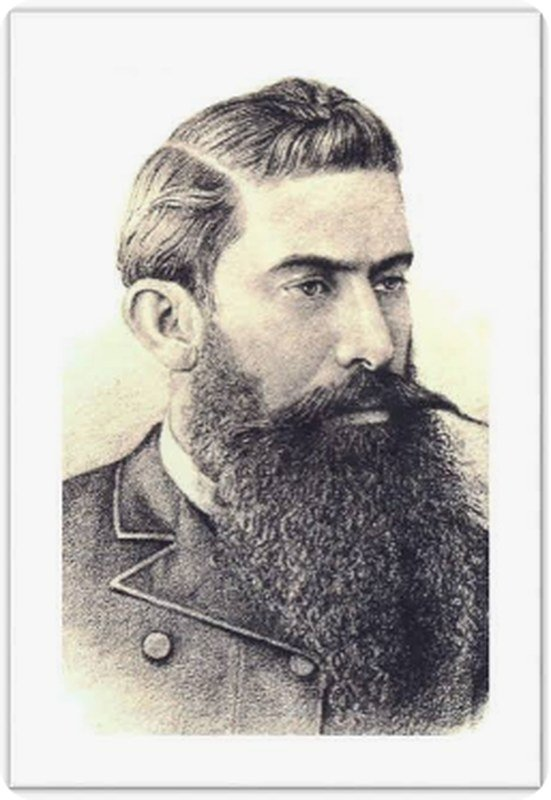

Casa Peña Berlanga × García Sánchez · Saltillo y Torreón

Abogado, tres veces gobernador de Coahuila y fundador de Torreón · 1847 – 1926
Abogado saltillense, gobernador de Coahuila en 1884, 1909 y 1913–1914, y empresario de La Laguna: fundador de la Compañía de Luz y Fuerza Eléctrica de Saltillo y del Banco de Coahuila, y uno de los fundadores de Torreón.
Praxedis de la Peña García nació en Saltillo, Coahuila, el 8 de noviembre de 1847, hijo de Praxedis de la Peña Berlanga y de María Julia García Sánchez. Murió en Torreón el 15 de enero de 1926 y fue sepultado en Saltillo.
Cursó la preparatoria en el Colegio Isaac Pitman y se tituló de abogado en 1870. Contrajo matrimonio con Concepción Valdés Elguezábal, con quien tuvo nueve hijos. A partir de 1885 se estableció en La Laguna, donde se dedicó a los negocios, principalmente en el Rancho del Torreón, que después sería villa y ciudad.
Figura puente entre el Saltillo decimonónico y la pujante Comarca Lagunera, su nombre está unido a los orígenes de Torreón y a la modernización económica de Coahuila. Por línea materna —María Julia García Sánchez— lleva el apellido García, razón por la que figura en esta galería de los García de Coahuila; su filiación con otras ramas del archivo está pendiente de prueba documental.
Retrato grabado de época (identificación por pie de foto en fuente secundaria; confianza media). Se publica con atribución justa para uso ilustrativo genealógico.
Saltillo, 8 de noviembre de 1847 — Torreón, 15 de enero de 1926. Hijo de Praxedis de la Peña Berlanga y María Julia García Sánchez. Casó con Concepción Valdés Elguezábal. Hijos: Emilio, Mauro, Arturo, Ernesto, Herminia.
Abogado en 1870. Gobernador provisional de Coahuila en 1884, 1909 y 1913–1914. En 1885 adquirió las tierras de El Pilar, mil quinientas hectáreas de riego junto al rancho del Torreón. Socio fundador y presidente de quince empresas laguneras entre 1898 y 1907: La Fe (hilados y tejidos), tranvía eléctrico, Banco de la Laguna, Compañía Metalúrgica de Torreón, jabonera de La Laguna. Hacienda El Pilar, San Francisco de Afuera, Compuertas, Maravillas, Luisiana.
Jacoba de la Peña Saucedo, presentación civil en Patos el 1 de febrero de 1878, hija de Juana Saucedo. Por Jacoba entra a la línea de los García del Huachichil.
Esta biografía también está publicada, con sus fuentes, en genealogiasefardi.site. Información avalada por Sefarad MX y genealogiasefardi.site.